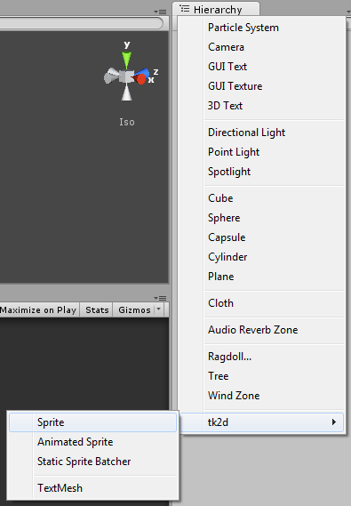
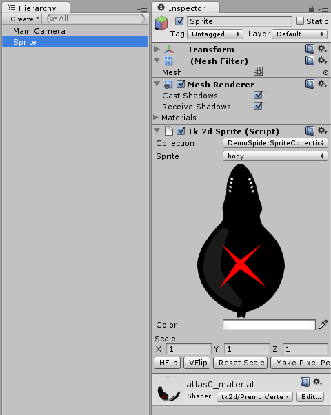
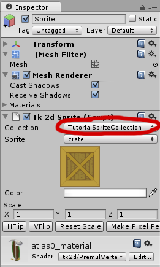
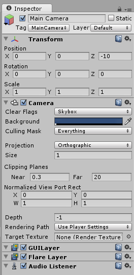

Documentation
Script Reference
Forum
Documentation
Script Reference
Forum
Create a sprite by clicking on "Create > tk2d > Sprite" in the Hierarchy Window.

Your sprite now appears in the Hierarchy Window and in the viewport. It automatically picks a sprite id based on the information that is available, for instance, it will match the Sprite Collection to another which already exists in the scene.

Click on the sprite object in the Scene Tab or in the Hierarchy Window, and the Sprite editor inspector appears.

If 2D Toolkit hasn't automatically picked the correct Sprite Collection for you, you can now set it up. After that, select a Sprite from the Collection you have selected. The instance within your scene should update instantly to reflect the changes. If your Sprite Collection has a collider set up, an appropriate collider will automatically be built in the scene too.
Note: Set up your camera to the same parameters as the sprite collection. By default, the camera settings in the sprite collection default to an ortho size of 1.0, and a target resolution of 960x640. If you use these defaults, and your camera is created with the same settings, your sprites will automatically be pixel perfect.
